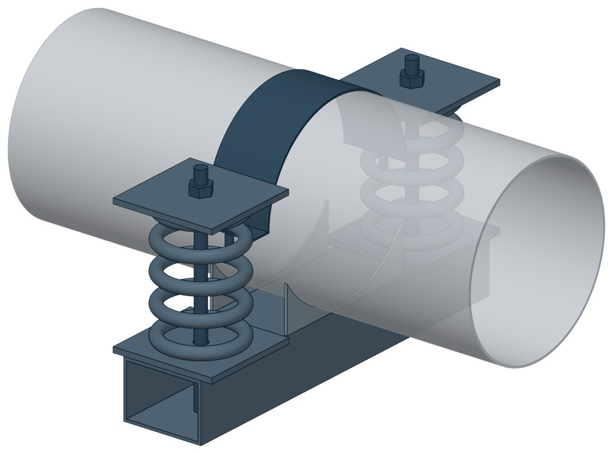

Подвески пружинные хомутовые на опорной балке ОСТ 24-125-122-01
ОСТ 24-125-122-01. Dн 159–920 мм, допускаемая нагрузка на узел — до 116,9 кН, масса 46,56–271,61 кг.

- Диаметр трубы Dн
- 159–920 мм
- Документ
- ОСТ 24-125-122-01
- Исполнений
- 96
- Допускаемая нагрузка на узел
- до 116,9 кН
- Масса
- 46,56–271,61 кг
- 3D-модели
- у всех исполнений (условные: общий вид по габаритам)
Таблица исполнений ОСТ 24-125-122-01
| Обозначение | Код ПРОМБУРГ | Dнмм | Допускаемая нагрузка на узелкН | Рабочая деформация пружины | Высота подвескимм | Высота опорной балкимм | Массакг | 3D |
|---|---|---|---|---|---|---|---|---|
| 01 ОСТ 24.125.122 | ПБ-24122-0159-1 | 159 | 32,7 | 140 | 213 | 510 | 54,23 | 3D |
| 02 ОСТ 24.125.122 | ПБ-24122-0159-2 | 159 | 32,7 | 70 | 213 | 310 | 46,56 | 3D |
| 03 ОСТ 24.125.122 | ПБ-24122-0159-3 | 159 | 39,3 | 140 | 213 | 510 | 58,43 | 3D |
| 04 ОСТ 24.125.122 | ПБ-24122-0159-4 | 159 | 39,3 | 70 | 213 | 310 | 48,91 | 3D |
| 05 ОСТ 24.125.122 | ПБ-24122-0194-1 | 194 | 32,7 | 140 | 260 | 510 | 57,53 | 3D |
| 06 ОСТ 24.125.122 | ПБ-24122-0194-2 | 194 | 32,7 | 70 | 260 | 310 | 49,86 | 3D |
| 07 ОСТ 24.125.122 | ПБ-24122-0194-3 | 194 | 39,3 | 140 | 260 | 510 | 61,73 | 3D |
| 08 ОСТ 24.125.122 | ПБ-24122-0194-4 | 194 | 39,3 | 70 | 260 | 310 | 52,21 | 3D |
| 09 ОСТ 24.125.122 | ПБ-24122-0219-1 | 219 | 32,7 | 140 | 277 | 510 | 57,79 | 3D |
| 10 ОСТ 24.125.122 | ПБ-24122-0219-2 | 219 | 32,7 | 70 | 277 | 310 | 50,12 | 3D |
| 11 ОСТ 24.125.122 | ПБ-24122-0219-3 | 219 | 39,3 | 140 | 277 | 510 | 61,99 | 3D |
| 12 ОСТ 24.125.122 | ПБ-24122-0219-4 | 219 | 39,3 | 70 | 277 | 310 | 52,47 | 3D |
| 13 ОСТ 24.125.122 | ПБ-24122-0245-1 | 245 | 32,7 | 140 | 290 | 510 | 61,63 | 3D |
| 14 ОСТ 24.125.122 | ПБ-24122-0245-2 | 245 | 32,7 | 70 | 290 | 310 | 53,96 | 3D |
| 15 ОСТ 24.125.122 | ПБ-24122-0245-3 | 245 | 39,3 | 140 | 290 | 510 | 65,83 | 3D |
| 16 ОСТ 24.125.122 | ПБ-24122-0245-4 | 245 | 39,3 | 70 | 290 | 310 | 56,31 | 3D |
| 17 ОСТ 24.125.122 | ПБ-24122-0273-1 | 273 | 32,7 | 140 | 310 | 510 | 63,89 | 3D |
| 18 ОСТ 24.125.122 | ПБ-24122-0273-2 | 273 | 32,7 | 70 | 310 | 310 | 56,22 | 3D |
| 19 ОСТ 24.125.122 | ПБ-24122-0273-3 | 273 | 39,3 | 140 | 310 | 510 | 68,09 | 3D |
| 20 ОСТ 24.125.122 | ПБ-24122-0273-4 | 273 | 39,3 | 70 | 310 | 310 | 58,57 | 3D |
| 21 ОСТ 24.125.122 | ПБ-24122-0325-1 | 325 | 32,7 | 140 | 346 | 510 | 68,29 | 3D |
| 22 ОСТ 24.125.122 | ПБ-24122-0325-2 | 325 | 32,7 | 70 | 346 | 310 | 60,62 | 3D |
| 23 ОСТ 24.125.122 | ПБ-24122-0325-3 | 325 | 39,3 | 140 | 346 | 510 | 72,49 | 3D |
| 24 ОСТ 24.125.122 | ПБ-24122-0325-4 | 325 | 39,3 | 70 | 346 | 310 | 62,97 | 3D |
| 25 ОСТ 24.125.122 | ПБ-24122-0377-1 | 377 | 56,2 | 140 | 360 | 510 | 116,95 | 3D |
| 26 ОСТ 24.125.122 | ПБ-24122-0377-2 | 377 | 56,2 | 70 | 360 | 410 | 105,42 | 3D |
| 27 ОСТ 24.125.122 | ПБ-24122-0377-3 | 377 | 65,2 | 140 | 360 | 660 | 133,98 | 3D |
| 28 ОСТ 24.125.122 | ПБ-24122-0377-4 | 377 | 65,2 | 70 | 360 | 410 | 113,53 | 3D |
| 29 ОСТ 24.125.122 | ПБ-24122-0426-1 | 426 | 56,2 | 140 | 404 | 510 | 120,43 | 3D |
| 30 ОСТ 24.125.122 | ПБ-24122-0426-2 | 426 | 56,2 | 70 | 404 | 410 | 108,9 | 3D |
| 31 ОСТ 24.125.122 | ПБ-24122-0426-3 | 426 | 65,2 | 140 | 404 | 660 | 137,46 | 3D |
| 32 ОСТ 24.125.122 | ПБ-24122-0426-4 | 426 | 65,2 | 70 | 404 | 410 | 117,01 | 3D |
| 33 ОСТ 24.125.122 | ПБ-24122-0465-1 | 465 | 56,2 | 140 | 433 | 510 | 129,46 | 3D |
| 34 ОСТ 24.125.122 | ПБ-24122-0465-2 | 465 | 56,2 | 70 | 433 | 410 | 117,93 | 3D |
| 35 ОСТ 24.125.122 | ПБ-24122-0465-3 | 465 | 65,2 | 140 | 433 | 660 | 146,49 | 3D |
| 36 ОСТ 24.125.122 | ПБ-24122-0465-4 | 465 | 65,2 | 70 | 433 | 410 | 126,04 | 3D |
| 37 ОСТ 24.125.122 | ПБ-24122-0530-1 | 530 | 80 | 140 | 430 | 660 | 171,59 | 3D |
| 38 ОСТ 24.125.122 | ПБ-24122-0530-2 | 530 | 80 | 70 | 430 | 410 | 148,63 | 3D |
| 39 ОСТ 24.125.122 | ПБ-24122-0530-3 | 530 | 97,2 | 140 | 430 | 660 | 178,63 | 3D |
| 40 ОСТ 24.125.122 | ПБ-24122-0530-4 | 530 | 97,2 | 70 | 430 | 410 | 153,07 | 3D |
| 41 ОСТ 24.125.122 | ПБ-24122-0630-1 | 630 | 80 | 140 | 500 | 660 | 195,28 | 3D |
| 42 ОСТ 24.125.122 | ПБ-24122-0630-2 | 630 | 80 | 70 | 500 | 410 | 172,36 | 3D |
| 43 ОСТ 24.125.122 | ПБ-24122-0630-3 | 630 | 97,2 | 140 | 500 | 660 | 202,41 | 3D |
| 44 ОСТ 24.125.122 | ПБ-24122-0630-4 | 630 | 97,2 | 70 | 500 | 410 | 176,8 | 3D |
| 45 ОСТ 24.125.122 | ПБ-24122-0720-1 | 720 | 116,9 | 140 | 542 | 620 | 261,59 | 3D |
| 46 ОСТ 24.125.122 | ПБ-24122-0720-2 | 720 | 116,9 | 70 | 542 | 410 | 230,29 | 3D |
| 47 ОСТ 24.125.122 | ПБ-24122-0920-1 | 920 | 116,9 | 140 | 686 | 620 | 271,61 | 3D |
| 48 ОСТ 24.125.122 | ПБ-24122-0920-2 | 920 | 116,9 | 70 | 686 | 410 | 240,31 | 3D |
| 49 ОСТ 24.125.122 | ПБ-24122-0159-5 | 159 | 32,7 | 140 | 192 | 510 | 54,37 | 3D |
| 50 ОСТ 24.125.122 | ПБ-24122-0159-6 | 159 | 32,7 | 70 | 192 | 310 | 46,7 | 3D |
| 51 ОСТ 24.125.122 | ПБ-24122-0159-7 | 159 | 39,3 | 140 | 192 | 510 | 58,57 | 3D |
| 52 ОСТ 24.125.122 | ПБ-24122-0159-8 | 159 | 39,3 | 70 | 192 | 310 | 49,05 | 3D |
| 53 ОСТ 24.125.122 | ПБ-24122-0194-5 | 194 | 32,7 | 140 | 241 | 510 | 56,8 | 3D |
| 54 ОСТ 24.125.122 | ПБ-24122-0194-6 | 194 | 32,7 | 70 | 241 | З'О | 49,13 | 3D |
| 55 ОСТ 24.125.122 | ПБ-24122-0194-7 | 194 | 39,3 | 140 | 241 | 510 | 61,09 | 3D |
| 56 ОСТ 24.125.122 | ПБ-24122-0194-8 | 194 | 39,3 | 70 | 241 | 310 | 51,48 | 3D |
| 57 ОСТ 24.125.122 | ПБ-24122-0219-5 | 219 | 32,7 | 140 | 257 | 510 | 58,09 | 3D |
| 58 ОСТ 24.125.122 | ПБ-24122-0219-6 | 219 | 32,7 | 70 | 257 | 310 | 49,33 | 3D |
| 59 ОСТ 24.125.122 | ПБ-24122-0219-7 | 219 | 39,3 | 140 | 257 | 510 | 61,2 | 3D |
| 60 ОСТ 24.125.122 | ПБ-24122-0219-8 | 219 | 39,3 | 70 | 257 | 310 | 51,68 | 3D |
| 61 ОСТ 24.125.122 | ПБ-24122-0245-5 | 245 | 32,7 | 140 | 270 | 510 | 60,7 | 3D |
| 62 ОСТ 24.125.122 | ПБ-24122-0245-6 | 245 | 32,7 | 70 | 270 | 310 | 53,03 | 3D |
| 63 ОСТ 24.125.122 | ПБ-24122-0245-7 | 245 | 39,3 | 140 | 270 | 510 | 64,98 | 3D |
| 64 ОСТ 24.125.122 | ПБ-24122-0245-8 | 245 | 39,3 | 70 | 270 | 310 | 55,38 | 3D |
| 65 ОСТ 24.125.122 | ПБ-24122-0273-5 | 273 | 32,7 | 140 | 290 | 510 | 62,92 | 3D |
| 66 ОСТ 24.125.122 | ПБ-24122-0273-6 | 273 | 32,7 | 70 | 290 | 310 | 55,25 | 3D |
| 67 ОСТ 24.125.122 | ПБ-24122-0273-7 | 273 | 39,3 | 140 | 290 | 510 | 67,12 | 3D |
| 68 ОСТ 24.125.122 | ПБ-24122-0273-8 | 273 | 39,3 | 70 | 290 | 310 | 57,6 | 3D |
| 69 ОСТ 24.125.122 | ПБ-24122-0325-5 | 325 | 32,7 | 140 | 326 | 510 | 67,16 | 3D |
| 70 ОСТ 24.125.122 | ПБ-24122-0325-6 | 325 | 32,7 | 70 | 326 | 310 | 59,46 | 3D |
| 71 ОСТ 24.125.122 | ПБ-24122-0325-7 | 325 | 39,3 | 140 | 326 | 510 | 71,36 | 3D |
| 72 ОСТ 24.125.122 | ПБ-24122-0325-8 | 325 | 39,3 | 70 | 326 | 310 | 61,84 | 3D |
| 73 ОСТ 24.125.122 | ПБ-24122-0377-5 | 377 | 52,7 | 140 | 340 | 510 | 115,23 | 3D |
| 74 ОСТ 24.125.122 | ПБ-24122-0377-6 | 377 | 52,7 | 70 | 340 | 410 | 103,7 | 3D |
| 75 ОСТ 24.125.122 | ПБ-24122-0377-7 | 377 | 65,2 | 140 | 340 | 660 | 132,26 | 3D |
| 76 ОСТ 24.125.122 | ПБ-24122-0377-8 | 377 | 65,2 | 70 | 340 | 410 | 111,81 | 3D |
| 77 ОСТ 24.125.122 | ПБ-24122-0426-5 | 426 | 52,7 | 140 | 384 | 510 | 118,43 | 3D |
| 78 ОСТ 24.125.122 | ПБ-24122-0426-6 | 426 | 52,7 | 70 | 384 | 410 | 106,9 | 3D |
| 79 ОСТ 24.125.122 | ПБ-24122-0426-7 | 426 | 65,2 | 140 | 384 | 660 | 135,46 | 3D |
| 80 ОСТ 24.125.122 | ПБ-24122-0426-8 | 426 | 65,2 | 70 | 384 | 410 | 115,01 | 3D |
| 81 ОСТ 24.125.122 | ПБ-24122-0465-5 | 465 | 52,7 | 140 | 413 | 510 | 127,49 | 3D |
| 82 ОСТ 24.125.122 | ПБ-24122-0465-6 | 465 | 52,7 | 70 | 413 | 410 | 115,96 | 3D |
| 83 ОСТ 24.125.122 | ПБ-24122-0465-7 | 465 | 65,2 | 140 | 413 | 660 | 144,52 | 3D |
| 84 ОСТ 24.125.122 | ПБ-24122-0465-8 | 465 | 65,2 | 70 | 413 | 410 | 124,07 | 3D |
| 85 ОСТ 24.125.122 | ПБ-24122-0530-5 | 530 | 80 | 140 | 410 | 660 | 169,38 | 3D |
| 86 ОСТ 24.125.122 | ПБ-24122-0530-6 | 530 | 80 | 70 | 410 | 410 | 146,46 | 3D |
| 87 ОСТ 24.125.122 | ПБ-24122-0530-7 | 530 | 97,2 | 140 | 410 | 660 | 176,51 | 3D |
| 88 ОСТ 24.125.122 | ПБ-24122-0530-8 | 530 | 97,2 | 70 | 410 | 410 | 150,9 | 3D |
| 89 ОСТ 24.125.122 | ПБ-24122-0630-5 | 630 | 80 | 140 | 480 | 660 | 191,86 | 3D |
| 90 ОСТ 24.125.122 | ПБ-24122-0630-6 | 630 | 80 | 70 | 480 | 410 | 168,94 | 3D |
| 91 ОСТ 24.125.122 | ПБ-24122-0630-7 | 630 | 97,2 | 140 | 480 | 660 | 198,99 | 3D |
| 92 ОСТ 24.125.122 | ПБ-24122-0630-8 | 630 | 97,2 | 70 | 480 | 410 | 173,38 | 3D |
| 93 ОСТ 24.125.122 | ПБ-24122-0720-3 | 720 | 116,9 | 140 | 522 | 620 | 257,19 | 3D |
| 94 ОСТ 24.125.122 | ПБ-24122-0720-4 | 720 | 116,9 | 70 | 522 | 410 | 245,89 | 3D |
| 95 ОСТ 24.125.122 | ПБ-24122-0820-1 | 820 | 116,9 | 140 | 598 | 620 | 265,8 | 3D |
| 96 ОСТ 24.125.122 | ПБ-24122-0820-2 | 820 | 116,9 | 70 | 598 | 410 | 234,5 | 3D |
Чтобы заказать, сообщите обозначение и код ПРОМБУРГ: +7 (499) 325-51-35, promburg@yandex.ru.
Нормативные документы
- ОСТ 24.125.122-01 Подвески трубопроводов ТЭС и АЭС. Подвески пружинные хомутовые на опорной балке. Конструкция и размеры — документ, по которому изготавливается изделие
Связанные позиции
- Соседний тип: ОСТ 24-125-124-01 — Балки опорные для пружин (упомянут в области применения стандарта)
- Соседний тип: ОСТ 24-125-123-01 — Корпус на опорной балке для пружин (упомянут в области применения стандарта)
На трубу Dн 159–920 мм в каталоге
Позиции каталога с исполнениями на те же наружные диаметры трубы.
Детали трубопровода
- Фланец стальной воротниковый общих Dн: 11
- Фланец стальной плоский приварной общих Dн: 11
- Отвод стальной крутоизогнутый 90°, 09Г2С общих Dн: 10
- Отвод стальной крутоизогнутый 90° общих Dн: 10
- Заглушка стальная эллиптическая общих Dн: 8
- Переход стальной концентрический общих Dн: 7
- Днище стальное эллиптическое общих Dн: 6
- Отвод нержавеющий 90° общих Dн: 1
Компенсаторы
- Компенсатор сильфонный 2СКУ.ППМ (ИЯНШ) 2СКУППМИ общих Dн: 11
- Компенсатор сильфонный КСО общих Dн: 11
- Компенсатор сильфонный КСОФ общих Dн: 11
- Компенсатор сильфонный стартовый СК общих Dн: 11
- Компенсатор сильфонный СКУ.ППМ (ИЯНШ) СКУППМИ общих Dн: 11
- Компенсатор сильфонный 2ОПКР общих Dн: 10
- Компенсатор сильфонный 2ОПКР (ИЯНШ) 2ОПКРИ общих Dн: 10
- Компенсатор сильфонный 2СКУ.М 2СКУМ общих Dн: 10
- Компенсатор сильфонный 2СКУ.М (ИЯНШ) 2СКУМИ общих Dн: 10
- Компенсатор сильфонный 2СКУ.ППУ (ИЯНШ) 2СКУППУИ общих Dн: 10
- Компенсатор сильфонный 2СКУ.ППУ/ОЦ (ИЯНШ) 2СКУППУОЦИ общих Dн: 10
- Компенсатор сильфонный КС общих Dн: 10
- Компенсатор сильфонный КСО (ИЯНШ) КСОИ общих Dн: 10
- Компенсатор сильфонный ОПКР общих Dн: 10
И ещё 20 типов — в оглавлении каталога.
Другие опоры и подвески
- Блок хомутовый ОСТ 24-125-113-01 общих Dн: 14
- Полухомуты для хомутовых блоков подвесок горизонтальных трубопроводов из хромо молибден о ванадиевых сталей ОСТ 24-125-114-01 общих Dн: 14
- Подвески хомутовые на опорной балке с проушинами ОСТ 24-125-118-01 общих Dн: 14
- Корпус на опорной балке с проушинами ОСТ 24-125-119-01 общих Dн: 14
- Полухомут для хомутовых опор ОСТ 24-125-120-01 общих Dн: 14
- Балки опорные с проушинами ОСТ 24-125-121-01 общих Dн: 14
- Корпус на опорной балке для пружин ОСТ 24-125-123-01 общих Dн: 14
- Балки опорные для пружин ОСТ 24-125-124-01 общих Dн: 14
- Опоры приварные неподвижные скользящие ОПН общих Dн: 13
- Опора скользящая хомутовая ТС-626 общих Dн: 12
И ещё 94 типа — в оглавлении каталога.
Другие типы раздела
Подвески и пружинные блоки по ОСТ 24.125.111…125
- Блок пружинный подвесной ОСТ 24-125-111-01
- Опорные пружинные блоки ОСТ 24-125-112-01
- Блок хомутовый ОСТ 24-125-113-01
- Полухомуты для хомутовых блоков подвесок горизонтальных трубопроводов из хромо молибден о ванадиевых сталей ОСТ 24-125-114-01
- Блоки хомутовые с траверсой ОСТ 24-125-116-01
- Хомуты сварные ОСТ 24-125-117-01
- Подвески хомутовые на опорной балке с проушинами ОСТ 24-125-118-01
- Корпус на опорной балке с проушинами ОСТ 24-125-119-01
- Полухомут для хомутовых опор ОСТ 24-125-120-01
- Балки опорные с проушинами ОСТ 24-125-121-01
- Корпус на опорной балке для пружин ОСТ 24-125-123-01
- Балки опорные для пружин ОСТ 24-125-124-01
- Подвески приварные на опорной балке с проушинами ОСТ 24-125-125-01
Частые вопросы
По какому диаметру подбирать — Dн или Ду?
По наружному диаметру трубы Dн: именно он стоит в таблицах серии. Ду — условный проход, округлённая величина: Ду 100 соответствует Dн 108. В заявке указывайте Dн и толщину стенки трубы.
В старом проекте нагрузка в тс, а здесь в кН. Как сравнить?
Серия 4.903-10 даёт нагрузки в тонна-силах, серия 5.903-13 — в килоньютонах. 1 тс = 9,81 кН, то есть 10 тс — это около 98 кН. В таблицах каталога переключатель единиц пересчитывает значения.
Из какой стали изготавливаются опоры?
По рабочим чертежам серии листовые детали — Ст3сп5 ГОСТ 14637-89, хомуты из круга — сталь 20 ГОСТ 1050-88. Для районов с низкой расчётной температурой воздуха применяется низколегированная сталь, в том числе 09Г2С; размеры опор при этом не меняются. В заявке укажите расчётную температуру наружного воздуха.
Почему часть поверхностей опоры не окрашена?
Поверхности под приварку к трубе и к несущей конструкции оставляют без краски, иначе шов получится некачественным. Их консервируют смазкой, которую снимают перед сваркой.
Что указать в заявке, чтобы получить цену без уточнений?
Обозначение с номером исполнения или код ПБ, количество, Dн и стенку трубы, расчётную температуру наружного воздуха, покрытие, город доставки и желаемый срок. Кнопка «В заявку» в таблице собирает спецификацию, которую можно выгрузить в Excel или отправить письмом.